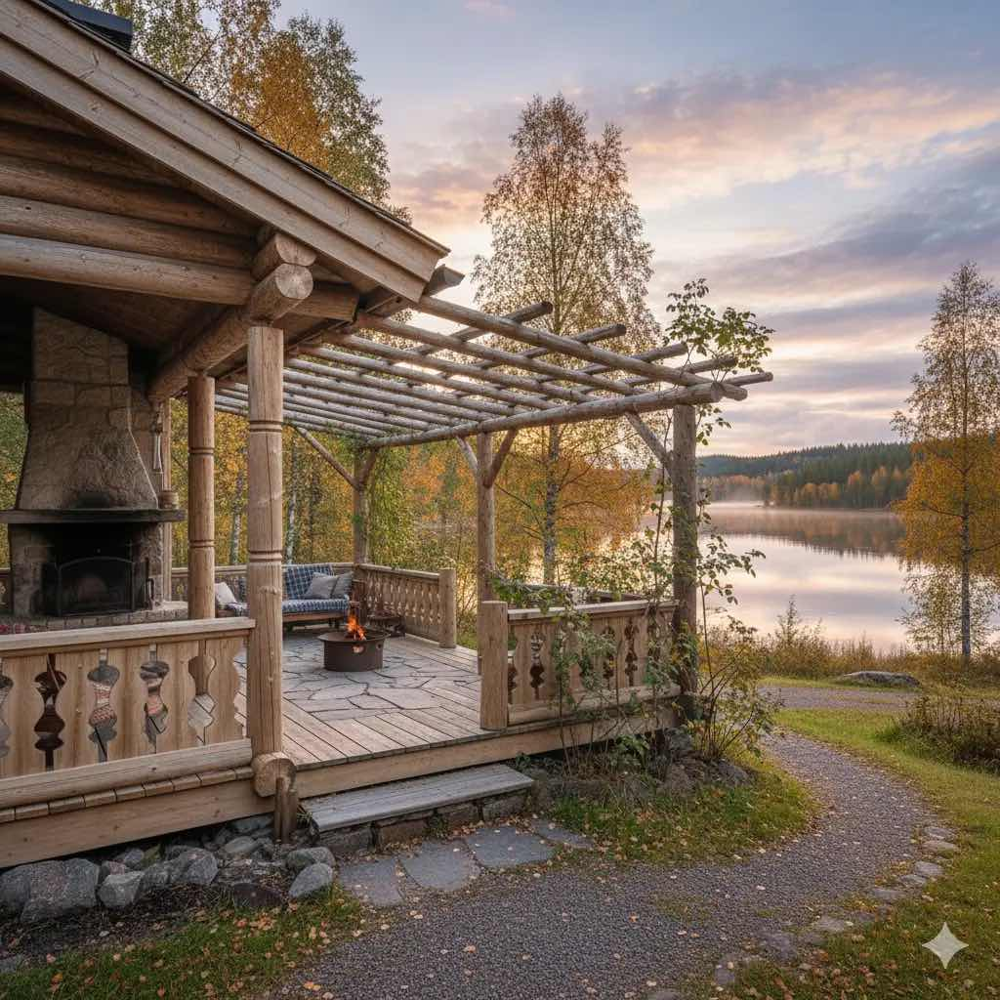
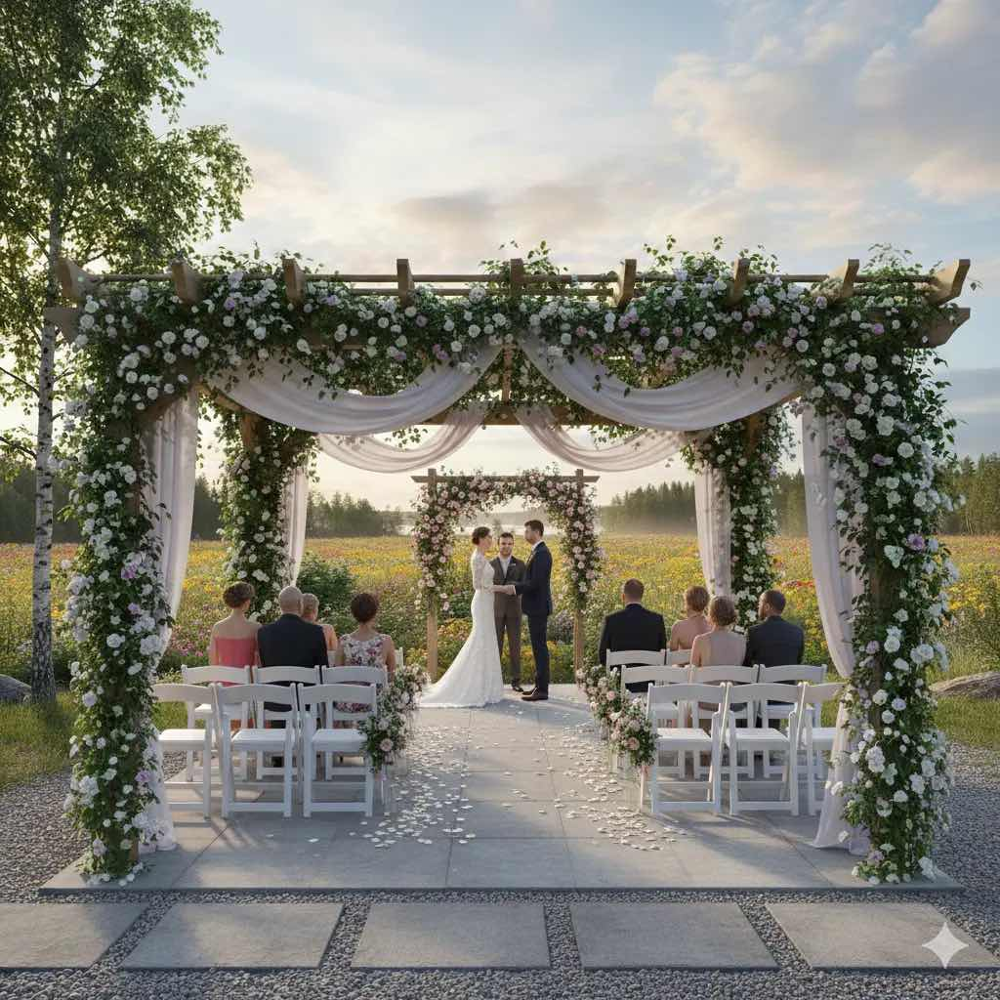
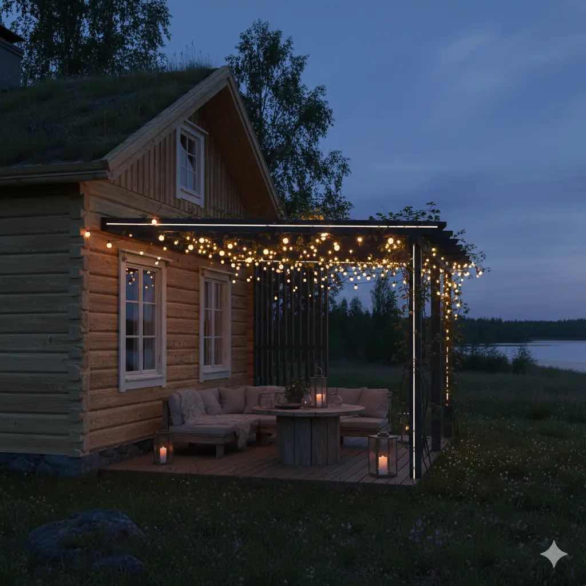
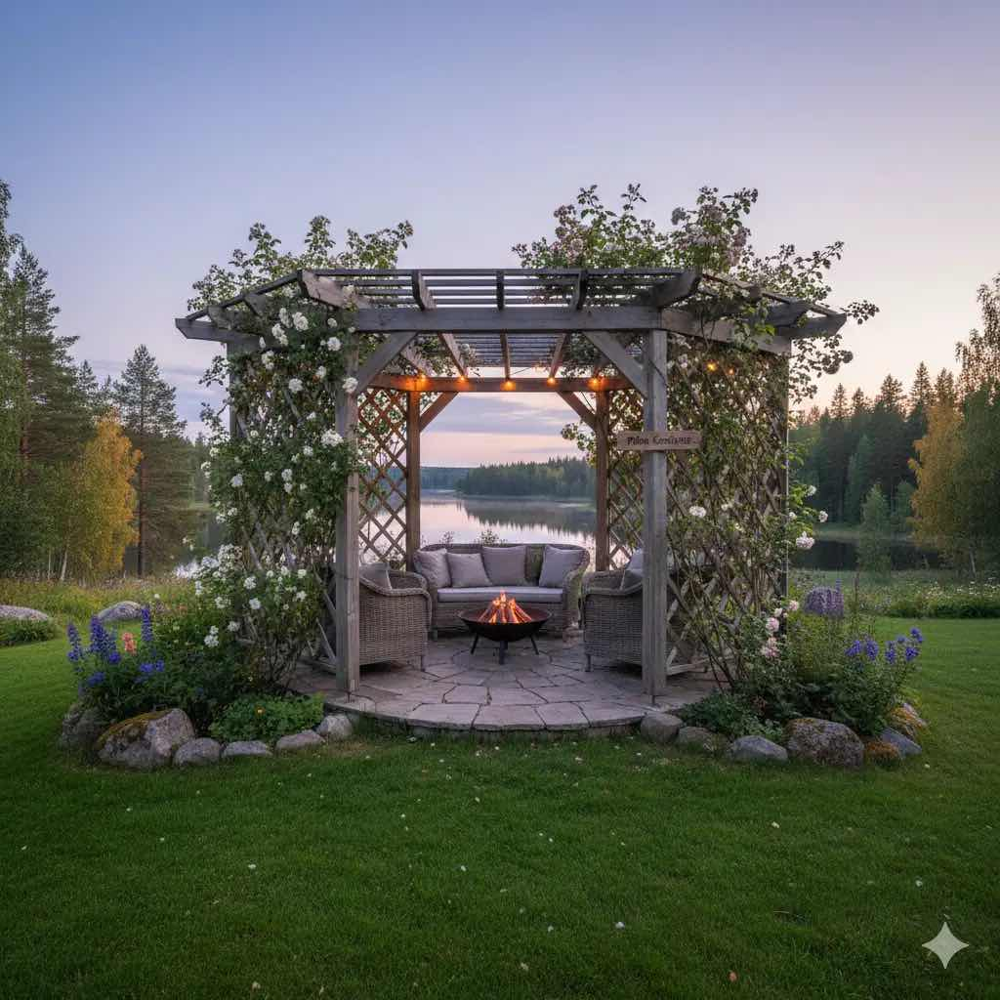

Pergolat
Rakennamme mittatilauspergolat terassin jatkeeksi tai pihan erilliseksi oleskelualueeksi koko Pohjois-Karjalassa.
Pergolapalvelu
Pergola on tyylikäs ratkaisu, joka tuo terassille tai pihalle tunnelmaa ja suojaa. Toteutamme lasitettuja ja avoimia pergolaratkaisuja, jotka sopivat niin rannalla kuin kaupunkipihoissakin Pohjois-Karjalassa.
Toteutamme pergolat mittatilaustyönä puusta, kelohirrestä tai komposiitista. Lisävarusteina tarjoamme valaistuksen, kasviratkaisut ja aurinkosuojat - suunnittelemme ratkaisun pihan ilmansuuntien ja käyttötarpeen mukaan.

Lisämahdollisuudet
Valaistus
Pergolaan integroidut valot iltakäyttöä varten.
Näkösuoja
Säleiköt ja sivuratkaisut lisäävät suojaa.
Kasviratkaisut
Pergola toimii hyvin köynnöksille ja viherseinille.
Katos
Mahdollisuus lisätä suojaa sateelta ja auringolta.
Lisätietoja pergoloista
Pergola toimii parhaiten, kun ilmansuunta, päivän aurinko ja tuulikuormat arvioidaan ennen materiaalivalintaa. Kaikissa pergola-kohteissa suunnittelemme usein yhdistelmän, jossa varjostus, sadevesien ohjaus ja oleskelun yksityisyys ratkaistaan samaan rakenteeseen ilman raskasta katosvaikutelmaa.
Pergola voidaan ankkuroida terassiin tai omille perustuksille kohteen mukaan, ja samalla lisätä valaistus, köynnöstuet tai sivuseinät käyttötarpeen mukaan. Jokaisen kohteen kiinnitys- ja suojaustapa valitaanmaapohjan ja säärasituksen perusteella. Prosessi etenee käytännöllisesti: arviokäynti Pohjois-Karjalan alueella, luonnosratkaisu, materiaalit ja toteutus aikataulussa.
Kuvagalleria




Moderni lasitettu pergola – Pielisjoen ranta
Moderni lasitettu pergola Pielisjoen rannassa; tarjoaa suojan ja näkymän jokimaisemaan, Joensuu / Pohjois-Karjala.